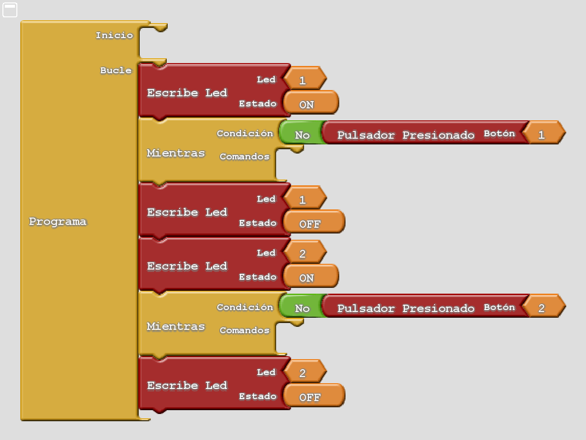
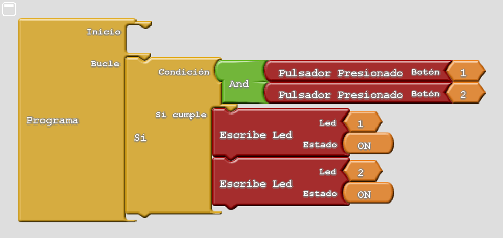
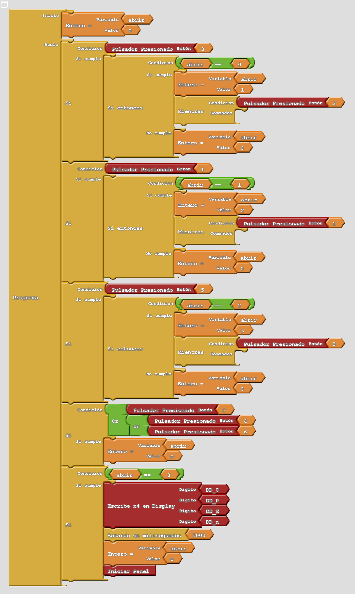

4. Exercises with buttons¶
Program the blocks needed to solve the following problems.
Ignition with pushbutton. Copy the following program that turns on led D1 if pushbutton 1 is pressed.

Complete the previous exercise so that led D1 turns off if button 2 is pressed.
Ignition sequence. Copy the following program that lights two leds with buttons. LED D1 will light up when button 1 is pressed. Then LED D2 will light up when button 2 is pressed. LED D2 cannot be turned on before LED D1 lights up.

Complete the previous program so that the buttons turn on all the leds up to D6.
Scrolling lights. Copy the program, which works as follows:
When the program starts, LED D1 lights up.
By pressing button 1, led D1 will go off and led D2 will come on.
Then, when button 2 is pressed, led D2 will go off and led D3 will come on.
Complete the previous program so that it continues lighting the leds to the right until reaching led D5.
At the end, by pressing button 5, led D5 will turn off and led D1 will turn on again.
Inverse displacement. Modify the previous program so that the leds light up from D5 to D1.
When it is time to turn off led D1, led D5 will light up again.
Bimanual ignition Copy the following program that lights leds D1 and D2 by pressing buttons 1 and 2 at the same time.
This program can be used to activate a dangerous press when two separate buttons are pressed at the same time with both hands. This protects the hands from the danger of the press.
Modify the previous program so that the three leds D1, D2 and D3 light up when pressing the three buttons 1, 2 and 3 at the same time.
The three LEDs must go off when pressing button 4.
Electronic lock. Copy the following program that simulates an electronic lock. By pressing the sequence of buttons 3, 1 and 5 in order, an electronic lock will open. The opening is indicated by the word OPEN on the display.
Modify the previous exercise so that the lock opens by pressing the sequence of buttons 2, 6, 1 and 4.
{kind=link}
{kind=link}
{kind=link}